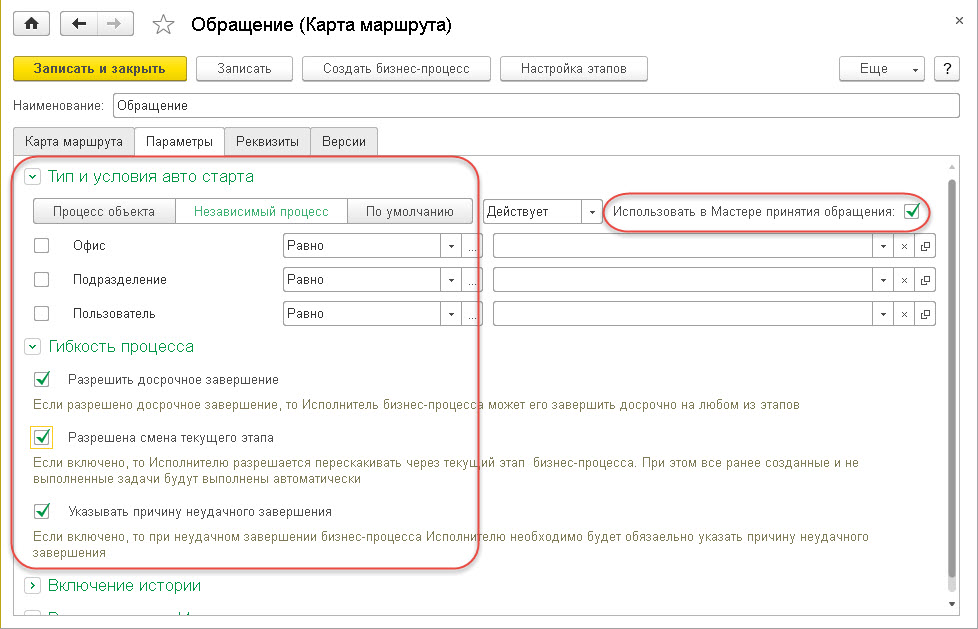
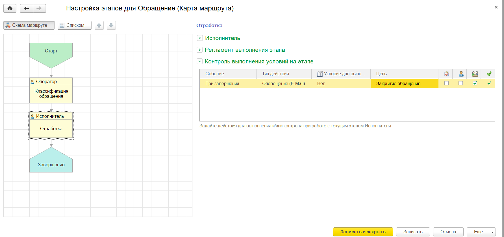

Помимо улучшения основного процесса компании - выполнения продаж, важным является управление лояльностью наших клиентов. Клиенты обращаются в нашу компанию по разным вопросам и часто они не связаны непосредственно с продажами. При этом клиент обращается в нашу компанию, как в "одно окно" - это удобно для него! Для сохранения лояльности клиентов после первого общения, следует организовать процесс по работе с такими обращениями. Они могут быть разными (линия консультаций, работа со складом, бухгалтерия и т.д.), но начинать нужно с одного общего для всех - это процесс региcтрации обращения. В рамках этого процесса мы регистрируем все обращения согласно регламенту компании (например, в течение 2 часов мы обязательно должны дать обратную связь клиенту).
Задача: Организовать процесс работы с обращениями клиентов со следующими условиями:
Шаг № 1: Настройка карты маршрута "Обращение"
В решении "1С: CRM" уже имеется в библиотеке бизнес-процессов предопределенная карта маршрута "Обращение" - используем её. Для этого зайдем в раздел "Процессы - Справочники и настройки - Карты маршрутов бизнес-процессов" и откроем элемент "Обращение". Оставляем маршрут без изменений и перейдем на закладку "Параметры", проверим, что тип процесса выбран, как "Независимый" и установим галку "Использовать в Мастере принятия обращения". Остальные настройки оставим по умолчанию. В результате у нас должны быть настроены параметры, как на Рисунке № 1.

Рисунок № 1. Параметры настройки карты маршрута "Обращение"
Шаг № 2: Настройка автоматических действий в процессе
Настроим оповещение для клиента при регистрации обращения от него. В форме карты маршрута "Обращение" выберем команду "Настройка этапов" и выделим самый первый этап в карте "Классификация обращения" и справа в группе "Контроль выполнения условий на этапе" введем по команде из контекстного меню следующее условие:

Рисунок № 2. Настройка оповещения при регистрации обращения
Такими же действиями выполним настройку оповещения для этапа "Отработка", а именно:
 )
)
Рисунок №3. Условия отправки оповещения потенциальному клиенту
Работа менеджеров при регистрации Обращения
Порядок работы менеджера по принятию обращения ничем не отличается от порядка регистрации документа "Интерес", а именно: с помощью "Мастера принятия обращения". Подробное описание работы мастера описано в разделе Главное - Помощь - Мастер принятия обращения >>>
В общем случае, для регистрации обращений может быть достаточно уже созданного нами процесса "Обращение". В тоже время процессов по которым регистрируются обращения от клиентов не связанных с продажами, может быть значительно больше. Приведем часть из них:
При организации процессов работы с клиентами есть рекомендации - таких процессов не должно быть больше 5 вариантов. Менеджер при приеме обращения должен быстро определять, куда передать обращение клиента. Если есть необходимость детализировать дальше обращение клиента - следует это делать уже в рамках настроенных процессов.
С описанием обработки обращений не связанных с продажами можно познакомиться здесь >>>
У карты маршрута имеется важный реквизит "Состояние". Карта маршрута будет использоваться в решении, если у неё установлено состояние в значение "Действует". При остальных состояниях такая карта задействована НЕ будет. Указываем состояние в значение "Действует" у созданной карты маршрута, оставляем все остальное по умолчанию и закрываем её, сохраняя сделанные изменения: выбираем команду "Записать и закрыть".
Работа с обращеними клиентов не связанных с продажами также очень важна!
С помощью простых настроек Вы организовали процесс работы с такими обращениями: он стал понятным и сразу доступен всем менеджерам компании.
Вы сделали #IT просто! :)